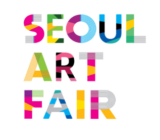
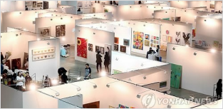
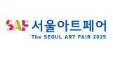
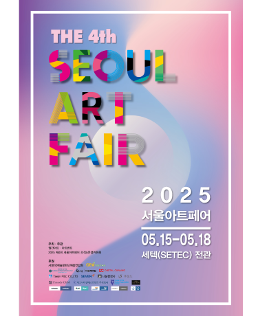
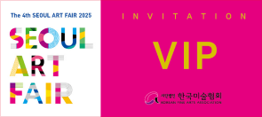
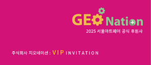

2025 제 4회
서울 아트페어

지난 2022년 8월에 첫 개최를 하여 올해 3회를 맞이하는
서울아트페어는 다양한 현대미술 작품들이
전시되고 미술
애호가, 컬렉터, 그리고 관련 분야 전문가들이 한자리에
모이는 국제적인 아트페어 이다.
서울에서 매년 개최되는 미술인들의 축제 2025 제4회
서울아트페어가 강남구에 위치한 세텍(SETEC)에서
5월 15일 부터 성대하게 개최된다.


에이스디에이엠(ADAM) 아트사업본부는 서울아트페어
재단과 함께 한국의 실력있는 아티스트를 발굴하고 그들이
꿈을 실현할수 있도록 매니지먼트 하여 K-Art 산업이
K-Pop 이나 K-Food 신드롬을 이어 K-Art의 산업적인 성장과 기업과
아티스트의 안정적인 수익을 제공해 줄수 있는 아트상품과
아트 플랫폼의 운영을 기획 제작중에 있습니다.
기업과 아티스트 들의 많은 참여 바랍니다.

2025 서울아트페어 전시개요
기간 2025년 5월15일(목)~18일(일)
개막식 2025년 5월15일(목) 오후3시
위치 SECT 1,2,3홀 전관 (서울시 강남구
남부순환로 3104,3호선 학여울역)
기업 후원 VIP 티켓 문의
기업의 다양한 고객 마케팅과직원복지에 사용할 수 있도록
기업 전용 티켓을 제작 발행해 드립니다.


예) VIP 티켓 뒷면에 후원사 로고 와 원하는 문구를 넣어 전용 티켓을
제작해 드립니다.